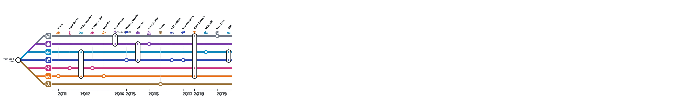

Where to?
or tap any station on the map
ERA 2
Gordon Bellamy, 2011 to now

Where to?
Every station, line by line, with his words and the source. Nothing on the map is locked behind a play.
On ABC's Million Dollar Mind Game he captained the Video Game Geeks.
“the chairman of the game developers association”
his on-air introduction, aired Oct 30, 2011, Million Dollar Mind Game tape HJF-XEUXrLk, 0:00:54 (caption)
To walk away with the pot, the whole team must vote yes. What happened? Not unanimous. They played on, and lost it all on "the king in chess."
Source: ABC, aired 2011-10-30 and 2011-11-06; tapes HJF-XEUXrLk, VmS9Qupe4_E. R Era 2; E2D section 1. LIKELY, PUBLIC.
By 2012 he was inviting people to Tuesday night dodgeball in West Hollywood.
“weho on tuesday nights Dodgeball nights”
July 16, 2012, his LinkedIn message
Source: LinkedIn message 2012-07-16; R Era 2. VERIFIED, PRIVATE.
The game-show run kept going: The Chase in 2014, Celebrity Name Game in 2015.
“#HarvardCalled”
Aug 26, 2014, his post about The Chase
Source: R Era 2; CN Thread 11. LIKELY, PUBLIC.
Before David Vermillion's first game, Gordon sent the playbook.
“There are 7 balls... Catching Wins games... Oh and have fun.”
Mar 8, 2016, his message to David
Source: E2D section 4. LIKELY, PRIVATE.
His first EDC, with Mason, at 45.
“We didn't know what we didn't know #edc #firsttimers”
June 20, 2016, his post
Source: E2D section 4. LIKELY, PRIVATE.
He lost 50 pounds and started running.
“I can go one mile, I can go six miles or whatever it's going to be, but I'm going to go somewhere. And it's been transformative”
July 14, 2017, Playmakers, 37:54
Source: Playmakers 2017-07-14; R Era 2. VERIFIED, PUBLIC.
Now he hands first times out: Quinn's first EDM show, and David's first rave at Escape, 10.26.18.
Source: E2D section 4. LIKELY, PRIVATE.
A Vegas tournament double catch, retold on stage in 2020.
“the three on one i caught the two balls of course spike them... and it was just like chef's kiss”
uploaded Dec 4, 2020, CMX Summit, 30:37
Source: YouTube LAhHQHkWDDA; R Era 2. VERIFIED, PUBLIC.
More first times, handed out: Foster at Ultra Miami, and Jeff Royle's first WrestleMania, 4.2.22.
Source: E2D section 4. LIKELY, PRIVATE.
The first Zero Proof Board Game Night at GDC: Buzzworks, alcohol free. The party, so no one goes without one.
Source: SMS 2024-01-26 and LinkedIn event; counts from a private recap; E2D. date VERIFIED; counts LIKELY, PRIVATE.
Captain of AAAA Final Boss, coed, for Sin City Dodgeball, Jan 15 to 17, 2027. Nephew Werten on the roster; Nina Fiore coaching.
“I still wear 4, it's my number”
May 12, 2026, his text
Source: E2D section 4; jerseys arrived 10/22/2026 (E2). LIKELY, PRIVATE (teammates showable).
He married Joe Heally at San Ramon Golf Club. The day was livestreamed.
“we met 2/8/1998 on a Sunday Funday”
Nov 26, 2026, Gordon, typed to Darby
Source: FB status (date PUBLIC), details PRIVATE; GA item 5; R Era 2. VERIFIED.
At GDC, IGDA Black in Games gave him a lifetime honor, following Jerry Lawson (his account).
“when it's all over I will not count trophies... the people who came here today... that is what I want to count”
uploaded Mar 23, 2018, acceptance remarks, 3:54
Source: Acceptance remarks 2018-03-23; his March 2018 post; R Era 2. Plaque wording unread.. LIKELY (honor wording); quote VERIFIED, PUBLIC.
He reposts the pages of his 1984 talk to the U.S. Department of Education.
“TIL, I presented to the US Department of Education. I had just turned 14”
2019, his Instagram post
Source: CN Thread 5; PA item 8 (talk dated Nov 14, 1984). VERIFIED, PRIVATE.
Keynote at CEE's Congressional reception. His second time addressing the federal government; the first was Nov 14, 1984, at 14.
“i just spoke in congress”
Mar 5, 2026, 6:45 pm PT, his text
Source: His same-day texts, dossier and a CEE email; FB post 2026-03-09; PA item 8; R Era 2. VERIFIED.
Their 2014 wedding site, "two lifetimes, in the making," is restored and continued.
Source: E2 section 4. VERIFIED, PRIVATE.
He sends his scrapbook so this map could be built.
“you and tasklet received a treasure trove of photos”
Nov 26, 2026, his message
Source: PA header. VERIFIED, PRIVATE.
He married Joe Heally at San Ramon Golf Club. The day was livestreamed.
“we met 2/8/1998 on a Sunday Funday”
Nov 26, 2026, Gordon, typed to Darby
Source: FB status (date PUBLIC), details PRIVATE; GA item 5; R Era 2. VERIFIED.
Guest lecturing at UW-Madison, he met Brennan Murphy. They talked for about an hour and a half.
“our son went to Madison”
uploaded Dec 18, 2025, M+DEV interview, 1:17
Source: E2D section 2 (Brennan's 2019 video, LIKELY); M+DEV interview UzFTrHDBAZU. LIKELY; quote VERIFIED.
His first EDC, with Mason, at 45.
“We didn't know what we didn't know #edc #firsttimers”
June 20, 2016, his post
Source: E2D section 4. LIKELY, PRIVATE.
He turned 50 on Zoom. Brennan cut a 2:09 film of friends' selfie videos. Happy Birthday Gordon! (2:09)
Source: YouTube mYrEv6EtTzM (public since 2020-11-09); planning PRIVATE; R Era 2. VERIFIED.
The word changed in dated steps. Brennan said "son" first. Gordon answered it.
“How does my son KNOW that i am still carrying my hoodie”
Feb 18, 2022, 5:43 pm PT, his text
Source: E2D section 2. VERIFIED, PRIVATE.
Best man for Quinn Hovey, his US Soccer brother.
The best man toast was built on a joke about...? The American Outlaws, the US Soccer supporters' group they share.
Source: E2D section 4. LIKELY, PRIVATE.
A Minecraft world he builds weekly with Eric and Crystal Francksen's three sons: 58 landmarks, 19 regions.
Source: His Gordtopia.docx 2026-06-24; E2D section 4. LIKELY, PRIVATE.
Chicago with the Francksens, Eric's first Pride parade, then Wisconsin. He is Uncle G.
Source: E2D section 4. LIKELY, PRIVATE.
Captain of AAAA Final Boss, coed, for Sin City Dodgeball, Jan 15 to 17, 2027. Nephew Werten on the roster; Nina Fiore coaching.
“I still wear 4, it's my number”
May 12, 2026, his text
Source: E2D section 4; jerseys arrived 10/22/2026 (E2). LIKELY, PRIVATE (teammates showable).
He expanded IGDA Scholars. He calls it a direct ancestor of GGP Scholars.
“the scholars program that we had at igda... where identity for the first time was additive”
Apr 26, 2023, What is GGP, 3:29
Source: R Era 2 (FB section 2C); What is GGP 2023-04-26. LIKELY.
GGP becomes a nonprofit: tax ID in December 2018, IRS ruling in January 2020. Gordon CEO, Joe CFO.
Source: Public 990s; E2 section 2; R Era 2. VERIFIED, PUBLIC.
GGP Scholars has run every year since 2019.
Source: E2 section 2; R Era 2. VERIFIED.
GGP's first Pride stream, June 2020, honored a game pioneer he once knew up close.
Who did the stream honor? Dani Bunten Berry. He played M.U.L.E. on a Commodore 64 in 1983; in 1993 she was his housemate.
Source: E2 section 2; CN Thread 10; R Era 2. LIKELY, PUBLIC.
The word changed in dated steps. Brennan said "son" first. Gordon answered it.
“How does my son KNOW that i am still carrying my hoodie”
Feb 18, 2022, 5:43 pm PT, his text
Source: E2D section 2. VERIFIED, PRIVATE.
CYSTEM begins: GGP's graduate program with NYU, Carnegie Mellon and USC.
“not just a culture fit but a culture add”
Oct 26, 2022, GGP film, 2:18
Culture fit, or culture add? Not just a culture fit. A culture add.
Source: His email and Q3 2022 records; GGP film BTHwzjd-_Xc; R Era 2. VERIFIED.
The first Zero Proof Board Game Night at GDC: Buzzworks, alcohol free. The party, so no one goes without one.
Source: SMS 2024-01-26 and LinkedIn event; counts from a private recap; E2D. date VERIFIED; counts LIKELY, PRIVATE.
GGP launches the Collegiate Games Challenge.
Source: E2 section 2; R Era 2. LIKELY.
Keynote at CEE's Congressional reception. His second time addressing the federal government; the first was Nov 14, 1984, at 14.
“i just spoke in congress”
Mar 5, 2026, 6:45 pm PT, his text
Source: His same-day texts, dossier and a CEE email; FB post 2026-03-09; PA item 8; R Era 2. VERIFIED.
He began teaching at USC's School of Cinematic Arts as a Visiting Scholar.
“I had a lunch with Tracy Fullerton... no different than the NHL hockey call really”
June 27, 2021, NZXT Clubcast #094, 1:11:21
How did the door to USC open? A cold lunch with Tracy Fullerton. The same move as his 1993 cold call to EA.
Source: SCA In Motion, Winter 2025; NZXT Clubcast 2021-06-27; R Era 2. VERIFIED, PUBLIC.
Guest lecturing at UW-Madison, he met Brennan Murphy. They talked for about an hour and a half.
“our son went to Madison”
uploaded Dec 18, 2025, M+DEV interview, 1:17
Source: E2D section 2 (Brennan's 2019 video, LIKELY); M+DEV interview UzFTrHDBAZU. LIKELY; quote VERIFIED.
From its launch in 2015, he and Samuel Roberts led USC Games Bridge. A student shadowed him at E3 until losing their voice.
Source: USC Cinematic Arts news 2016-08-31; R Era 2. VERIFIED, PUBLIC.
How he describes the job of teaching.
“to move the furniture of life out of the way for them to be successful”
July 14, 2017, Playmakers, 20:33
Source: Playmakers 2017-07-14; R Era 2. VERIFIED, PUBLIC.
GGP Scholars has run every year since 2019.
Source: E2 section 2; R Era 2. VERIFIED.
Professor of the Practice of Cinematic Arts at USC.
“Games are a shared experience that we can impact, which is different than a shared experience that we both view”
Mar 16, 2021, USC Today
Film is a shared experience we view. Games are one we...? Can impact.
“Games are a shared experience that we can impact, which is different than a shared experience that we both view”
Mar 16, 2021, USC Today
Source: USC Today 2021-03-16; R Era 2. VERIFIED, PUBLIC.
Named Director of Cinematic Ethics for USC's School of Cinematic Arts.
“OH!! I am the new Director of Ethics for USC Cinema!”
Nov 25, 2024, his text
“How do we grow up a pie that we want to eat, that we are proud that we baked”
July 9, 2025, Valued Cultures, 0:04:20
Source: Text 2024-11-25; SCA In Motion Winter 2025; R Era 2. VERIFIED.
Keynote at CEE's Congressional reception. His second time addressing the federal government; the first was Nov 14, 1984, at 14.
“i just spoke in congress”
Mar 5, 2026, 6:45 pm PT, his text
Source: His same-day texts, dossier and a CEE email; FB post 2026-03-09; PA item 8; R Era 2. VERIFIED.
In CTIN 290, Madden 96 and Madden 27 run back to back.
“so that other young people could see themselves as default when they're growing up”
Feb 3, 2023, Daily Trojan
Source: Daily Trojan 2023-02-03; CN Thread 1; course notes PRIVATE. VERIFIED.
On ABC's Million Dollar Mind Game he captained the Video Game Geeks.
“the chairman of the game developers association”
his on-air introduction, aired Oct 30, 2011, Million Dollar Mind Game tape HJF-XEUXrLk, 0:00:54 (caption)
To walk away with the pot, the whole team must vote yes. What happened? Not unanimous. They played on, and lost it all on "the king in chess."
Source: ABC, aired 2011-10-30 and 2011-11-06; tapes HJF-XEUXrLk, VmS9Qupe4_E. R Era 2; E2D section 1. LIKELY, PUBLIC.
A judge at Imagine Cup 2012 in Sydney, controllers in hand.
“games are meant to be played not talked about”
uploaded July 8, 2012, Imagine Cup interview, 0:41
Source: YouTube b1u9lWxL3OQ; R Era 2. VERIFIED, PUBLIC.
At GDC, IGDA Black in Games gave him a lifetime honor, following Jerry Lawson (his account).
“when it's all over I will not count trophies... the people who came here today... that is what I want to count”
uploaded Mar 23, 2018, acceptance remarks, 3:54
Source: Acceptance remarks 2018-03-23; his March 2018 post; R Era 2. Plaque wording unread.. LIKELY (honor wording); quote VERIFIED, PUBLIC.
In his Games for Change keynote, he described an exercise from two days before.
“to say the words black is beautiful right to actually say it 10 times... am i saying this too loud or too quiet”
uploaded Aug 13, 2020, G4C "At the Table," 9:55
Source: YouTube c02C7pwDlwI; R Era 2. VERIFIED, PUBLIC.
Netflix's High Score told his Madden 95 story.
“I am the first voice you hear”
Feb 9, 2021, Lead With Your Brand, 0:23:30
The High Score trailer. Whose voice do you hear first? His.
“I am the first voice you hear”
Feb 9, 2021, Lead With Your Brand, 0:23:30
Source: High Score ep 4; Lead With Your Brand 2021-02-09; R Era 2. VERIFIED, PUBLIC.
On screen again: Rewind the '90s in 2023, and in 2024 the series It's in the Game.
It's in the Game (2024) is about which game? Madden NFL: It's in the Game, two episodes. The game where he helped make Black players the default, in Madden 95.
Source: IMDb list; Nutopia 2023-05-19; E2. VERIFIED, PUBLIC.
At UConn he named what changed: the compartments came down.
“This is the dream. back when I was younger was my whole self. God, someday it's going to be awesome. It's today.”
Apr 2025, UConn DMD, 1:24:44
Source: YouTube Lb8ZcOXPQ-I; R threads. VERIFIED, PUBLIC.
Back in Madison to open M+DEV with the keynote.
“the noise of people connecting. It's not the noise of technology. It's the noise of humans”
uploaded Dec 18, 2025, M+DEV interview, 5:11
He named the sound of the M+DEV hall. It was the noise of...? Humans.
“the noise of people connecting. It's not the noise of technology. It's the noise of humans”
uploaded Dec 18, 2025, M+DEV interview, 5:11
Source: YouTube UzFTrHDBAZU; R Era 2. VERIFIED, PUBLIC.
His thesis, in one breath.
“games were not a a choice or an occupation. They're an identity”
uploaded Feb 19, 2026, Black Game Pros Sessions, 0:11:40
"I'm the first this, first that." Single player, or multiplayer? "what if this was a multiplayer game because it's a multiplayer game" (0:49:03)
Source: YouTube 9LYYddhhi-8; R Era 2. VERIFIED, PUBLIC.
Keynote at CEE's Congressional reception. His second time addressing the federal government; the first was Nov 14, 1984, at 14.
“i just spoke in congress”
Mar 5, 2026, 6:45 pm PT, his text
Source: His same-day texts, dossier and a CEE email; FB post 2026-03-09; PA item 8; R Era 2. VERIFIED.
In CTIN 290, Madden 96 and Madden 27 run back to back.
“so that other young people could see themselves as default when they're growing up”
Feb 3, 2023, Daily Trojan
Source: Daily Trojan 2023-02-03; CN Thread 1; course notes PRIVATE. VERIFIED.
Executive director of the IGDA, the global game developers association, until July 2012.
“a great privilege to serve our global development community”
July 30, 2012, GamesBeat, 2012-07-30
July 2012. He leaves the IGDA for what? Tencent. GamesBeat, July 30, 2012: the IGDA chief joins Tencent.
Source: GamesBeat 2012-07-30; R Era 2. VERIFIED, PUBLIC.
He expanded IGDA Scholars. He calls it a direct ancestor of GGP Scholars.
“the scholars program that we had at igda... where identity for the first time was additive”
Apr 26, 2023, What is GGP, 3:29
Source: R Era 2 (FB section 2C); What is GGP 2023-04-26. LIKELY.
Tencent: mobile business development for QQ Mobile and WeChat, with his eval team in Shenzhen.
“I am at Narita Airport en route to shenzhen to my new gig!! Tencent!”
July 29, 2012, his LinkedIn message
“We had a company party in a soccer stadium”
June 28, 2017, Spawn On Me 178, 0:41:35
A Tencent company party. Where was it held? A soccer stadium.
“It was like working for the New York Yankees... We had a company party in a soccer stadium”
June 28, 2017, Spawn On Me 178, 0:41:35
Source: LinkedIn messages 2012-07-29, 2013-09-04; Spawn On Me 178; R Era 2. VERIFIED.
At GDC, IGDA Black in Games gave him a lifetime honor, following Jerry Lawson (his account).
“when it's all over I will not count trophies... the people who came here today... that is what I want to count”
uploaded Mar 23, 2018, acceptance remarks, 3:54
Source: Acceptance remarks 2018-03-23; his March 2018 post; R Era 2. Plaque wording unread.. LIKELY (honor wording); quote VERIFIED, PUBLIC.
Games for Change gave him its Vanguard Award.
“it's about what you do to help other people get from point A to point B”
July 8, 2020, GamesBeat
Source: GamesBeat 2020-07-08; R Era 2. VERIFIED, PUBLIC.
A credit on Wildgate, 2025.
Which credit? Creative consultant (LIKELY, per his LinkedIn and an outlet).
Source: E2 (LinkedIn plus outlet). LIKELY.
A Global Game Jam organizer, under the handle he has kept since AIM: gpbellamy.
Source: OI section 1; CN Part 2 item 16. VERIFIED, PUBLIC.
A Minecraft world he builds weekly with Eric and Crystal Francksen's three sons: 58 landmarks, 19 regions.
Source: His Gordtopia.docx 2026-06-24; E2D section 4. LIKELY, PRIVATE.
In CTIN 290, Madden 96 and Madden 27 run back to back.
“so that other young people could see themselves as default when they're growing up”
Feb 3, 2023, Daily Trojan
Source: Daily Trojan 2023-02-03; CN Thread 1; course notes PRIVATE. VERIFIED.
He joined Wave in 2016. In 2017 he described the virtual concerts: tracks color coded by tempo, mixed live with friends in other cities.
Source: E2; R Era 2. VERIFIED.
He lists a seat on the Queer Vox advisory board, June 2023.
Queer Vox is a nonprofit for whom? LGBTQIA+ voice actors. One more seat at his table.
Source: LinkedIn positions (his own listing); E2. CLAIM (his listing).
Strategic advisor to ScoreSpace.
Source: LinkedIn positions; E2. VERIFIED, PUBLIC.
BAFTA North America, November 2025.
An award, or a vote? A voting member. Inclusion, not a trophy. Another seat at the table.
Source: His public LinkedIn post; E2. VERIFIED, PUBLIC.
Board member at qoral.
Source: LinkedIn; E2. VERIFIED, PUBLIC.
Named to the GamesBeat event advisory board.
Source: GamesBeat, published 2026-09-18; E2. VERIFIED, PUBLIC.
On his desk: the Rookie of the Year trophy from 1994, beside the 2020 Vanguard Award.
“on my desk, I literally have my EA Rookie of the Year from 94”
uploaded Feb 19, 2026, Black Game Pros Sessions, 0:45:07
Source: VB section 3.5; trophy plate read from his photo (PA, IMG_5250): ROOKIE OF THE YEAR / 1994 / Electronic Arts; motto from Gordtopia (E2D section 4). VERIFIED.